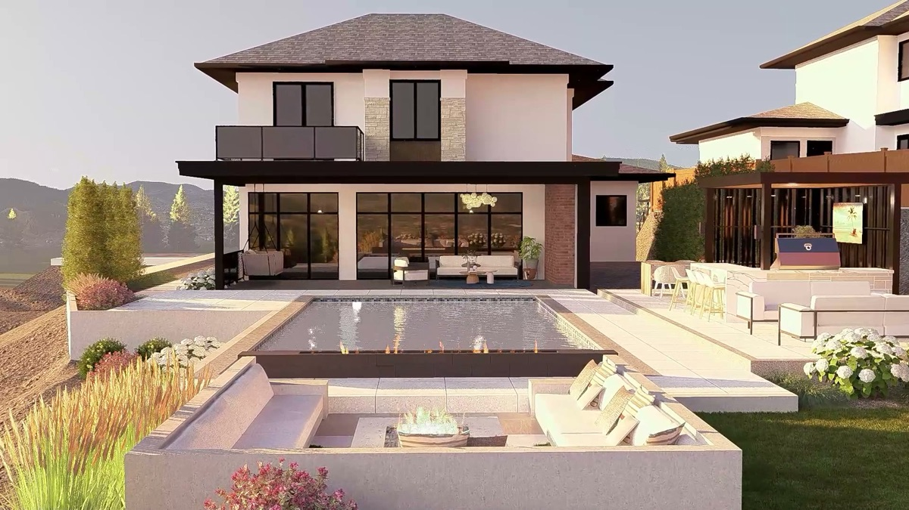

Call (250) 812 6112
Call (250) 812 6112
Call (250) 812 6112
Call (250) 812 6112

You don't gather around a fire pit. You gather around the seats next to it. The fire pit itself you can buy in an afternoon. The space around it is the part that takes thought, and it decides whether your fall evenings happen outside or on the couch.
Done right, it looks like this: a cool October night, the fire going, everyone in their spot with a blanket, the path back to the house lit, and nobody heading in until late.
A fire pit that gets used comes down to four things. Decide them on the drawing, with the rest of the yard, and the fire becomes the place your evening ends instead of a ring of stone on the lawn.
The spot. Close enough to the house that you go out on a cold night, far enough that the smoke stays out of your windows. Somewhere you can see from inside, so it pulls you out the door. And on its own level, not squeezed onto a slope.
The seating. Built-in or sunken seating keeps the circle a circle. Loose chairs drift off, end up stacked against the fence, and the fire turns into something you stand around for a few minutes.
The walk out. A path and steps that are easy to walk with your hands full, from the back door and back again. If getting there is a scramble across wet grass, you will not bother.
The light. Low light on the path and steps so the walk back is safe after dark, without drowning out the glow of the fire. Planned in with the design, the cable goes in while the beds are open.
Wood or gas is worth deciding early too. Check what your municipality allows, and settle it before the patio goes down, because anything that runs under a finished patio is the expensive kind of afterthought.
A fire pit bought on its own tends to look like it. Designed with your patio, kitchen and lighting, it shares their levels, materials and sightlines, so your fire sits where the seating and the view all point. You see the whole thing in 2D and 3D before anyone digs, with the cost to build it attached.
You also get one crew with twenty years in outdoor living. The people who draw your space build it, so you are not project-managing three companies who blame each other when something goes wrong.
Your quote won't be the cheapest one you get, and this is full design and build work. If all you need is a fire bowl set on the grass, you do not need a design-build crew, and if that is what you are after, you get pointed at someone better suited. If you want a gathering space drawn into the whole yard and built by the people who drew it, that is the job, and your design consult is free, with no obligation.
You also hear back the same working day. Ask anyone around here who has tried to get a backyard built and you hear the same complaint: you send the enquiry and never get a call back.
Yes. Kitchens, firepits, patios, pergolas and lighting get designed as one space and built by one crew.
Yes. You get a walk of your property and a budget range, with no charge and no obligation.
See how fire, seating and light fit together: outdoor living spaces in Vernon and the North Okanagan.